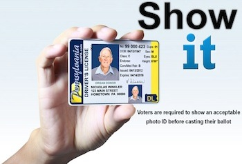
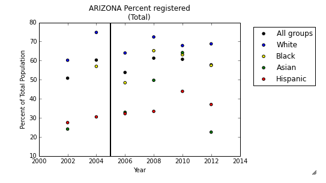
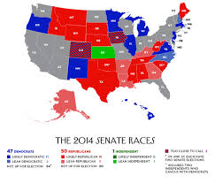

About This Project
We wanted to investigate the effects of voter identification laws on voter turnout and registration across different demographic groups.
The initial portion of the project focuses largely on the effects on different racial groups in different states.
Types of Voter ID Laws
It turns out not all voter id laws are created equal. Some, “non-strict laws”, have provisions that sometimes allow voters without identification to cast ballots. Others, with “strict laws”, do not. We scoured the internet to find information on when states implemented these laws.

Why It Matters
In the past few years, voter identification laws have become a contentious topic. Proponents say that they protect the voting process, while opponents say they depress turnout, especially among minority groups. However, there has been an abscence of hard data on the topic. Which is why our project is important.

How we did it
Our project had one major goal: to investigate the relationship between voter turnout and the existence of voter ID laws on a statewide level. We worked with the hypothesis that voter ID laws might impact members of various ethnic groups differently, so we began our analysis by looking at historical turnout data for elections from 2002 to 2012.
Voter laws and turnout by state and race
We looked at the effect of voter ID laws implemented between 2002 and 2012 for all 50 states. Our visualization for the effect on Alabama is below, with the vertical black line representing a strict voter ID law implemented in 2005.

Competitiveness
In addition, we found information on how competitive elections typically are in various states. More competitive elections can increase turnout, independent of voter ID laws. We visualized this here:

Predictive model
Using a method called difference-in-differences, we were able to predict the average deviation in voter turnout from the average, after a state implements a strict or non strict voter ID law. We found that voter turnout tends to decrease slightly after a law is implemented.

North Dakota, Mississippi, and Texas
We used our model to predict voter turnout in North Dakota, Mississippi, and Texas 2014 elections, all 3 of which have recently implemented voter ID laws in the past 2 years. We compared our predictions to actual turnout data. While overall turnout data has been released, turnout data for each ethnic group has not, so we were not able to compare those results with our predictions. In Mississippi and Texas, we were within 2 percentage points using this analysis alone, though our prediction was off for North Dakota. (We note that North Dakota was also an outlier in this year’s election cycle, with the second to highest voter turnout rate.)
